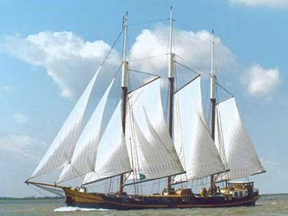

maandag 12 juli 2010

Vandaag stappen honderd muzikale studenten aan boord van de klippers Ambiance, Vrijheid en Auwe Neel. Met de afvaart begint de bijzondere tournee waarmee de jarige vereniging Noord-Holland tracteert op gratis toegankelijke zomerse concerten.